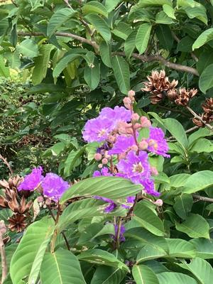

うるがいの話 ある日
最新: 図書館で同じ本を２度借りてしまう【うるがいの話 ある日】とは 一日だけのプログです
『うるがいの話』の最新一日だけのプログで、通信料が少なく経済的だ。カニの画像をクリックすると全ての日付が載る『うるがいの話』サイトを表示します
|
|
【うるがいの話】 うるがい(ｳﾙｶﾞｲ urugai)とは、『もずくがに』の名前でとても大きくなります。 |
|---|---|
|
|
【カミマヤーの話】 猫のことを方言でマヤーといいます。カミマヤー（kamimayaa）とは、神の猫のことです。 |
|
【たながぁの音楽】 たながぁ（ﾀﾅｶﾞｰ tanagaa）とは手長えびのことで、何種類かあり大きいのは車 エビぐらいになります。 |

|
【ぶながぁの話】 ぶながぁ(ﾌﾞﾅｶﾞｰ bunagaa)とは、赤い髪の毛、赤い身体、そして身長は１ｍ２０ｃｍ ぐらい、川の蟹を食べているの目撃された。場所は沖縄県国頭郡大宜味村のと ある村僕の隣近所に住んでいる爺さんから、聞いた話です。 |
|
|
【ギーマの話】 ギーマ(giima)とは、山原の里山に咲くスズランに似た、 花を付けます。実は食べられます、 気が付くと口の周りが紫になっています。 |
2025年07月04日 (金）図書館で同じ本を２度借りてしまう
15:16
それも８冊のなかの２冊も。１冊だと何度も経験したが、２冊とは
トホホ。このようなことにならないよう、記録を録りチェックをす
るのだが、この作家は、ズルしていた。
図書館で同じ本を２度借りてしまう
テーマ：日々のブログ
私は最近ちょっとボケてます。２週間に１度、図書館に行き、本を
３～４冊借りているのですが、最近、過去に読んだことのある本を
借りてしまうことが何度かありました滝汗アセアセいつも借りる時
、本の解説を読むのです。それを読んで、ああ、この本は読んだこ
とがないなと思って借ります。
ところが、家でその本を読み進めていくうちに、「あれ、この場面
知っている。あれ、あれ」と、読んだことがあることに気づくので
す。（最初のうちは、読んでもわからないところが一層ボケている。
読み進めていくうちに気づくのです）アセアセ一度読んだことのあ
る本を借りてしまったショックはいつも大きいです。あーあ、同じ
本を借りてしまったえーん、と落ち込みます。
私の場合、好きな作家の本ばかり選んで借りてくるから、こういう
ことが多々あるのでしょうね。
これを防ぐにはどうすればいいのでしょう。読書ノートを作るしか
ないかな。日付、本の題名、作家、簡単な感想を書いて持ち歩けば
いいのでしょうね。やってみるかな、ちょっと面倒だけど。
誰かのプログですが、私は元々ボケているのであまり落ち込みませ
ん。そして、すでに図書館記録とエクセルシートで記録しています
。今回は、ズルしました。
